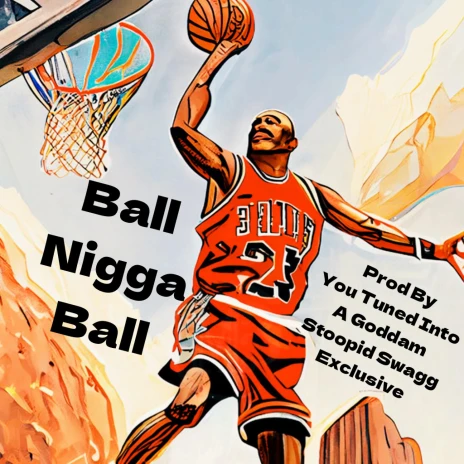

Câu lạc bộ Thể thao Trường THPT Đoàn Kết - Hai Bà trưng
1. CLB Bóng rổ: CLB Bóng chuyền là nơi dành cho các bạn học sinh được tự do thể hiện tài năng, CLB cũng là nơi để các thành viên cùng chung sở thích được gặp nhau và gắn bó với nhau nhiều hơn tại ĐK-HBT. 
"Ra mắt Câu lạc bộ Bóng rổ ĐK-HBT"
2. CLB Karate: Karate là bộ môn mang đậm phong cách tinh thần võ sĩ đạo. Ngoài luyện tập để phòng thân thì CLB còn là nơi giúp rèn luyện tính kiên trì, thêm bản lĩnh, nhạy bẹn để linh hoạt xử lý những tình huống trong cuộc sống.